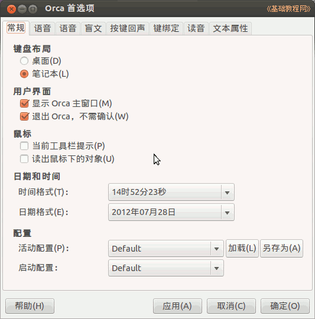
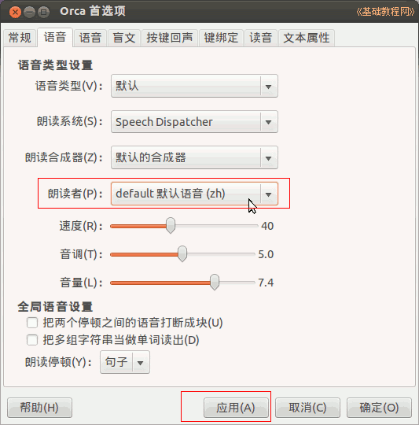
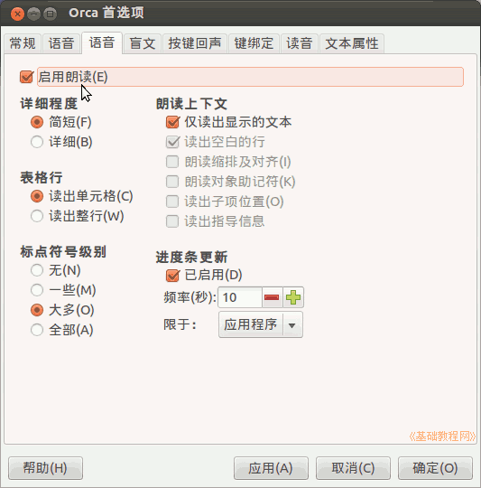
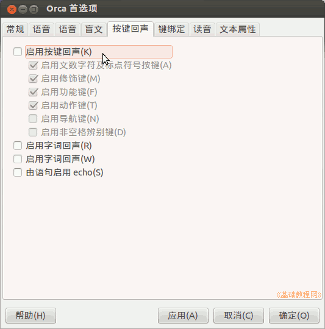
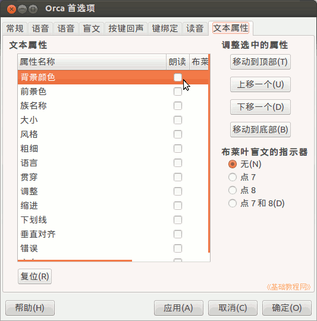

Ubuntu 入门操作指南
作者：TeliuTe 来源：基础教程网
五十四、Orca 屏幕阅读程序 返回目录 下一课Orca 可以朗读支持辅助功能程序的窗口内容，比如可以朗读火狐 Firefox 窗口中的内容和 Gedit 文本编辑器窗口，对计算机配置要求较高；
1、Orca 屏幕阅读程序
1）点击主按钮，在搜索中输入 orca ，打开程序，或者依次点“主按钮、所有程序、过滤结果、辅助功能、Orca 屏幕阅读程序”；
2）默认 Orca 会朗读当前窗口的许多信息，为此我们要减少一些干扰，首先我们要在“首选项”面板中设置一下，点主面板中的“首选项”按钮；
3）在第一个“常规”面板中，选择自己的计算机类型，打勾“朗读鼠标下的对象”、“退出 Orca 时，不需确认“；

4）在第二个“语音”标签中，如果没听到中文，就在“朗读者”中，先点“default(en)－应用”，再点“default默认语音(zh)－应用”，退出后重新开启就是中文朗读了，
在这里还可以设置朗读的速度、音调和音量等；

5）在第三个“朗读”标签中，可以设置是否开启“朗读”功能，以及朗读哪些 朗读内容；

6）在第一个“按键朗读”中，设置是否开启朗读按键，以及朗读字母还是词句；

7）在最后一个“文本属性”里，可以勾选朗读哪些文本格式和样式，开始可以都去掉减少干扰信息；

本节学习了Orca 屏幕阅读程序的基础知识，如果你成功地完成了练习，请继续学习下一课内容；
本教程由86团学校TeliuTe制作|著作权所有
基础教程网：http://teliute.org/
美丽的校园……
转载和引用本站内容，请保留版权信息和本站链接。